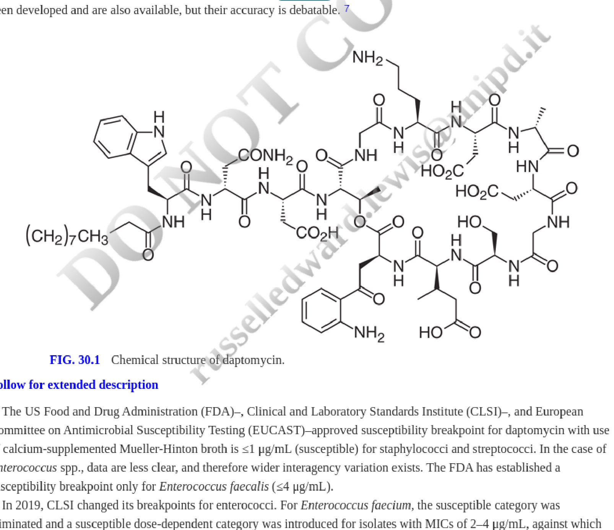
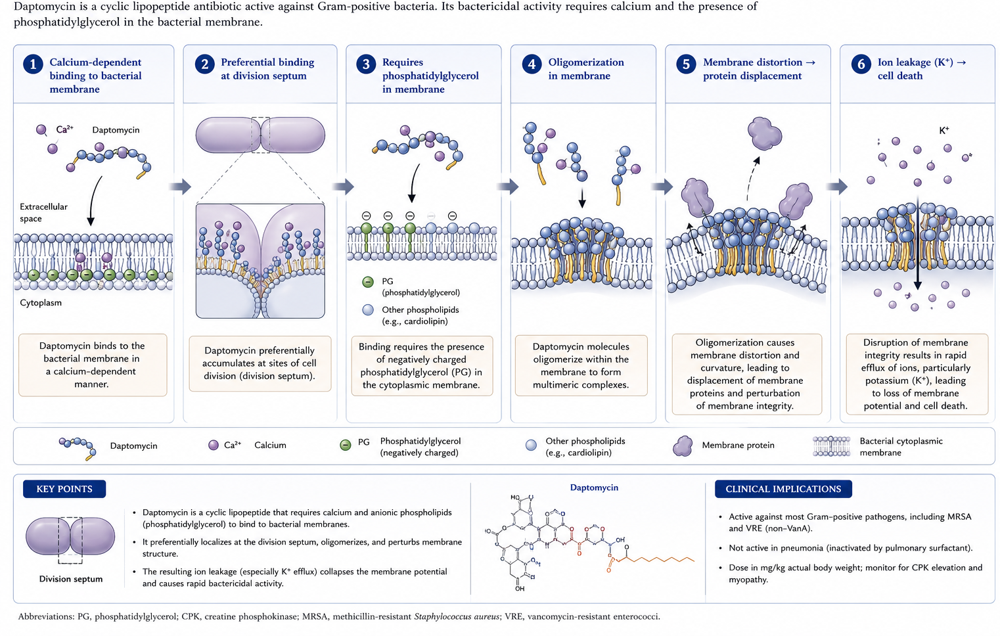

Streptogramins (Quinupristin-Dalfopristin) and Lipopeptides (Daptomycin)
Chapter 30
0.1 Learning Objectives
After reading this chapter, you should be able to:
- Describe the mechanism of action of daptomycin
- Understand daptomycin’s spectrum of activity and susceptibility testing
- Explain mechanisms of daptomycin resistance
- Apply appropriate dosing for different clinical scenarios
- Recognize adverse effects and monitoring requirements
- Identify clinical indications for daptomycin use
0.2 Daptomycin
Daptomycin is a high-molecular-weight cyclic lipopeptide antibiotic that targets the cell envelope (cell membrane and cell wall) of gram-positive bacteria in a calcium-dependent manner.
The antimicrobial activity closely overlaps that of glycopeptides. Daptomycin retains activity against many organisms with decreased susceptibility to glycopeptides, although high minimal inhibitory concentrations (MICs) of daptomycin have been observed in some vancomycin-intermediate Staphylococcus aureus isolates.
Currently, daptomycin is approved by the US Food and Drug Administration (FDA) for treatment of acute bacterial skin and skin structure infection (ABSSSI) caused by gram-positive cocci and for S. aureus bacteremia, including right-sided endocarditis.
Daptomycin is administered intravenously, once daily; the approved doses are 4 and 6 mg/kg/day for ABSSSI and for S. aureus bacteremia and right-sided endocarditis, respectively. However, experts recommend higher doses (8–12 mg/kg/day) for serious infections, particularly those caused by vancomycin-resistant enterococci (VRE). Dosage adjustment is required if the creatinine clearance is <30 mL/min.
Reversible muscle toxicity is the main adverse event. Less frequent adverse events are paresthesia, peripheral neuropathy, and eosinophilic pneumonia.
Because of the high risk for development of resistance and the “seesaw effect” (increased susceptibility to β-lactams when organisms become nonsusceptible to daptomycin), combinations of daptomycin and β-lactams are potential options for recalcitrant infections.
0.3 Quinupristin-Dalfopristin
Quinupristin-dalfopristin (Synercid) contains a streptogramin B (quinupristin) and a streptogramin A (dalfopristin) component in a 30:70 ratio. Streptogramins act synergistically within the 50S ribosomal subunit of the 70S ribosome in the elongation stage of protein synthesis.
This combination is active against most gram-positive organisms (except Enterococcus faecalis) and a few gram-negative organisms.
Variable rates of resistance among Enterococcus faecium isolates have been reported. Staphylococcus spp. strains with high MICs of quinupristin-dalfopristin have been rare.
The intravenous dose is 7.5 mg/kg every 12 hours for ABSSSI caused by S. aureus and Streptococcus pyogenes. Dosage adjustment is not required in renal failure, but a lower dose may be considered with hepatic disease. Quinupristin-dalfopristin may increase the levels of drugs metabolized through the cytochrome P-450 3A4 isoenzyme system.
Irritation at the infusion site is common when the drug is administered through peripheral veins. Arthralgias and myalgias may lead to drug discontinuation.
The FDA approval of quinupristin-dalfopristin for VRE was withdrawn after the initial trials failed to prove clinical benefit; however, anecdotal cases of success, usually in combination with other agent(s), for serious VRE infections suggest that it still may have a role in selected patients.
Because of its potential adverse events, the need for a central venous catheter for administration, and issues with efficacy and resistance, it is not often used in clinical practice and has limited availability in the United States.
1 Daptomycin
Daptomycin is a high-molecular-weight (1620.67 Da) cyclic 13-member lipopeptide antibiotic produced by Streptomyces roseosporus that was discovered in the early 1980s (Figure 1). In 1991, despite clinical trials that showed efficacy, skeletal muscle toxicity was observed with twice-daily doses in phase II trials, which led to discontinuation of clinical studies. The drug was subsequently “resurrected” using once-daily dosing, which reduced the muscle toxicity. Daptomycin was approved for use in 2003 in the United States and in 2006 in Europe.

1.1 Mechanism of Action

The exact mechanism for the antimicrobial activity of daptomycin is not fully understood. This agent targets the cell membrane of gram-positive organisms in a calcium-dependent manner, becoming a de facto cationic antimicrobial peptide (Silverman, Perlmutter, and Shapiro 2003). Insights into the mechanism of action of daptomycin suggest that the antibiotic binds to the cell membrane preferentially at the level of the division septum (Pogliano, Pogliano, and Silverman 2012). The interaction of the antibiotic with the bacterial cell membrane is dependent on the presence of phosphatidylglycerol, a negatively charged phospholipid (Jung et al. 2004). Once in the membrane, daptomycin, upon oligomerization, produces important distortions in the architecture of the cell membrane that likely result in displacement of membrane proteins essential for cell wall synthesis and cell division (Straus and Hancock 2006). More recent data suggest that, along with phosphatidylglycerol, daptomycin closely interacts with lipid-II intermediates, forming a tripartite complex that ultimately impedes peptidoglycan biosynthesis (Müller et al. 2016). The irreversible alteration of the cell envelope structure and physiology leads to loss of ions such as potassium that eventually results in bacterial cell death by mechanisms that have yet to be fully elucidated (Silverman, Perlmutter, and Shapiro 2003).
Furthermore, daptomycin exerts its bactericidal effect against Staphylococcus aureus and other gram-positive bacteria without significant cell lysis, which may explain the decreased release of proinflammatory mediators from infected macrophages compared with oxacillin and vancomycin.
Unlike β-lactams and vancomycin, daptomycin kills bacteria without significant cell lysis, resulting in reduced release of proinflammatory mediators. This may translate to a blunted inflammatory response in severe infections such as endocarditis, though clinical confirmation of this benefit remains an area of ongoing study.
1.2 Antimicrobial Activity
Because the in vitro activity of daptomycin is calcium-dependent, susceptibility testing must use calcium-supplemented Mueller-Hinton broth (50 μg/mL calcium). Disk diffusion is not recommended. Broth microdilution is the preferred method; gradient diffusion strips (Etest) and automated systems show variable reproducibility with significant interlaboratory variability.
The spectrum of antimicrobial activity of daptomycin closely overlaps that of glycopeptides. Because the in vitro activity of this drug is dependent on the presence of calcium in the medium, testing for susceptibility to daptomycin needs to be performed with dilution methods using calcium-adjusted Mueller-Hinton broth medium (calcium concentration of 50 μg/mL). Even in these circumstances, daptomycin susceptibility testing has proven challenging. Indeed, Campeau et al. performed broth microdilution to evaluate isolates with a wide range of minimal inhibitory concentration (MIC) values (≥0.15 to >16 μg/mL) and demonstrated significant variability across laboratories (Campeau, Schuetz, and Humphries 2018). The use of the Kirby-Bauer disk diffusion method is inaccurate and is not recommended. Calcium-supplemented gradient diffusion strips (Etest [bioMérieux, Marcy l’Etoile, France]) for use on agar are available, but discrepancies with broth microdilution and poor interlaboratory reproducibility also has been reported (Campeau, Schuetz, and Humphries 2018). Automated and semiautomated systems for susceptibility testing have been developed and are also available, but their accuracy is debatable (Humphries et al. 2011).
The US Food and Drug Administration (FDA), Clinical and Laboratory Standards Institute (CLSI), and European Committee on Antimicrobial Susceptibility Testing (EUCAST) approved susceptibility breakpoint for daptomycin with use of calcium-supplemented Mueller-Hinton broth is ≤1 μg/mL (susceptible) for staphylococci and streptococci. In the case of Enterococcus spp., data are less clear, and therefore wider interagency variation exists. The FDA has established a susceptibility breakpoint only for Enterococcus faecalis (≤4 μg/mL).
In 2019, CLSI changed its breakpoints for enterococci. For Enterococcus faecium, the susceptible category was eliminated and a susceptible dose-dependent category was introduced for isolates with MICs of 2–4 μg/mL, against which daptomycin doses of 8–12 mg/kg/day are recommended, and an MIC of ≥8 μg/mL is now considered fully resistant (Clinical and Laboratory Standards Institute 2019). For the remaining enterococcal species, the revised breakpoints are ≤2 μg/mL, 4 μg/mL, and ≥8 μg/mL, for the susceptible, intermediate, and resistant categories, respectively. It is important to note that the breakpoints were established using broth microdilution as the preferred testing method and not Etest. EUCAST has not established breakpoints for daptomycin.
Daptomycin is known to kill bacteria, including staphylococci, pneumococci, E. faecalis, and E. faecium, in vitro in a concentration-dependent bactericidal manner (Fuchs, Barry, and Brown 2002). Target organisms also include methicillin-resistant S. aureus (MRSA), vancomycin-intermediate S. aureus (VISA), and vancomycin-resistant enterococci (VRE) isolates (Fuchs, Barry, and Brown 2002; Rybak et al. 2000). Daptomycin also shows good in vitro activity against gram-positive anaerobes such as Peptostreptococcus spp. (MIC90, 1 μg/mL), Clostridium perfringens (MIC90, 0.5 μg/mL), and Clostridioides difficile (formerly Clostridium difficile) (MIC90, 1 μg/mL); some other clostridial species require higher concentrations for inhibition. It should be noted, however, that there are no established breakpoints for daptomycin susceptibility for anaerobes. The activity of daptomycin against different species of Actinomyces is variable (MIC90s, 4–32 μg/mL), and some Lactobacillus spp. appear to be less susceptible to daptomycin, whereas most Propionibacterium spp. and the vancomycin-resistant species Leuconostoc and Pediococcus are inhibited by daptomycin concentrations of 2 μg/mL.
A correlation between increased vancomycin MICs and daptomycin nonsusceptibility has been reported in S. aureus, with a high proportion of VISA strains (80% of isolates with vancomycin MIC of 4 μg/mL) reported as nonsusceptible to daptomycin (MIC >1 μg/mL) (Cui et al. 2006); this observation has not been confirmed in other studies (Kelley et al. 2011). Unlike many other antibacterial agents, daptomycin at high concentrations maintains its bactericidal activity against S. aureus even in stationary phase cultures (Mascio, Alder, and Silverman 2007), a phenomenon that could be related to its effect on the cell envelope. Daptomycin appears to maintain its activity against Staphylococcus epidermidis and S. aureus strains embedded in biofilm, perhaps explaining its reported efficacy against these structures and as antibiotic lock therapy in an animal model of staphylococcal central venous catheter infection.
1.3 Resistance
Development of resistance to daptomycin in vitro is uncommon, although strains with decreased susceptibility can be obtained after serial passage (Silverman et al. 2001). Only 0.7% and 0.04% of 10,000 clinical S. aureus strains in one large survey had an MIC ≥1 μg/mL and ≥2 μg/mL, respectively (Fuchs, Barry, and Brown 2002). These results were later confirmed in a more recent study evaluating more than 36,000 isolates from Europe and the United States (Jones et al. 2013). Nevertheless, increased daptomycin MICs of ≥2 μg/mL were observed in 6% of patients participating in a large S. aureus bacteremia and endocarditis clinical trial (Fowler et al. 2006). The majority of these strains were associated with microbiologic failure and, in most cases, patients had an undrained focus of infection (Fowler et al. 2006).
A much higher rate of development of nonsusceptibility to daptomycin was described among 10 patients with persistent S. aureus bacteremia who were switched from vancomycin to an approved dose of daptomycin (4–6 mg/kg/day) (Sakoulas et al. 2006). Indeed, S. aureus strains with higher daptomycin MICs displayed several phenotypic changes at the level of the cell membrane, including enhanced membrane fluidity, increased net positive surface charge, resistance to depolarization and/or permeabilization, a reduced amount of phosphatidylglycerol, increased pigment production, and decreased daptomycin surface binding. All of the aforementioned features correlated with reduction of daptomycin-induced depolarization (Mishra et al. 2012).
1.3.1 Genetic Basis of Daptomycin Resistance in S. aureus
Mutations in several genes have been implicated in the development of daptomycin nonsusceptibility in S. aureus. Among the most studied are mutations in:
mprF: A gene that encodes a bifunctional protein, lysyl-phosphatidylglycerol (LPG) synthase, and also has flippase activity, that is thought to contribute to decrease daptomycin susceptibility by increasing cell membrane positive charge by adding more LPG (a positively charged phospholipid) to the outer leaflet of the cell membrane and by specific changes in its flippase activity (Yang et al. 2009)
yycFG (walKR) and vraSR: Genes encoding two-component regulatory systems that appear to participate in the regulation of cell envelope homeostasis and stress response (Howden et al. 2011)
dlt gene cluster: Encodes the enzymatic machinery necessary for the D-alanylation of cell wall teichoic acids, contributing to increased cell surface charge (Yang et al. 2010)
rpoB and rpoC: Encoding the subunits of RNA polymerase
pgsA and cls: Which encode enzymes involved in cell membrane phospholipid metabolism (phosphatidylglycerol synthase and cardiolipin synthase, respectively), that modify cell membrane composition preventing daptomycin binding (Peleg et al. 2012; Arias, Panesso, McGrath, Qin, and others 2011)
In addition, development of daptomycin nonsusceptibility has also been associated with cross-resistance to endogenous antimicrobial peptides, including thrombin-induced platelet microbicidal proteins and human neutrophil-derived defensin 1 (Mishra et al. 2011). Finally, evidence suggests that some S. aureus strains have the ability to inactivate daptomycin by releasing membrane phospholipids (particularly phosphatidylglycerol) that bind and inactivate daptomycin; however, the clinical relevance of this phenomenon remains to be elucidated (Pader et al. 2016).
1.3.2 Daptomycin Resistance in Enterococci
Although the majority of enterococci remain apparently “susceptible” to daptomycin in vitro, the emergence of daptomycin nonsusceptibility seems to be more frequent in these organisms than in staphylococci. Indeed, several case reports have documented development of resistance to daptomycin (MICs ranging from 6 to >32 μg/mL) during treatment of enterococcal infections caused by E. faecalis and E. faecium. Moreover, the presence of daptomycin resistance in the absence of exposure to the antibiotic has also been described (Kelesidis et al. 2012).
Insights into the mechanism of daptomycin resistance have been provided (Arias, Panesso, McGrath, Qin, Mojica, et al. 2011; Palmer et al. 2011; Tran et al. 2013). Although some phenotypic changes in the cell envelope and cell membrane appear to be similar to those described in staphylococci, the genetic pathways seem to be different. The initial crucial event in the development of daptomycin resistance in enterococci involves changes in the LiaFSR system (a homologue of VraTSR of S. aureus), a three-component regulatory system that orchestrates the cell envelope stress response to antibiotics and antimicrobial peptides. Indeed, deletion of liaR, the putative transcriptional regulator of the system, was able to completely restore daptomycin susceptibility in E. faecium and E. faecalis, independent of the genetic background (Arias, Panesso, McGrath, Qin, Mojica, et al. 2011; Reyes et al. 2015).
Recent data suggest that LiaX (whose transcription is regulated by LiaR) is critical for the cell membrane response to daptomycin by recognizing the antibiotic and functioning as a radar for the identification of antimicrobial peptides (Khan et al. 2019). Moreover, a mutation in the first gene of the system, liaF, encoding a putative transmembrane protein, was sufficient to reduce daptomycin susceptibility (although not above the clinical breakpoint) and abolish the in vitro bactericidal activity of the antibiotic (Tran et al. 2013). An increase in daptomycin MICs above the breakpoint is usually associated with additional mutations in genes encoding enzymes involved in cell membrane phospholipid metabolism (e.g., gdpD and cls) that affect cell membrane homeostasis (Tran et al. 2013). Of note, a marked decrease in cell membrane phosphatidylglycerol content, important for daptomycin oligomerization within the cell membrane, has been documented in daptomycin-resistant E. faecalis and E. faecium recovered from patients during therapy with daptomycin (Arias, Panesso, McGrath, Qin, Mojica, et al. 2011) and in other daptomycin-resistant gram-positive organisms (Palmer et al. 2011). Finally, LiaFSR-independent pathways of daptomycin resistance have been described in E. faecalis, involving changes in YxdJK, a two-component regulatory system that also is involved in the cellular stress response (Davlieva et al. 2013).
1.3.3 The Seesaw Effect and Combination Therapy
The events leading to reduced daptomycin susceptibility in both staphylococci and enterococci can result in increased susceptibility to certain β-lactams (the “seesaw effect”) (Mehta et al. 2012). Indeed, daptomycin plus oxacillin significantly decreased colony-forming units per gram of vegetations when compared with daptomycin alone in experimental endocarditis caused by daptomycin-nonsusceptible strains (MICs of 2 and 4 μg/mL) of S. aureus (Mehta et al. 2012). The combination of daptomycin with other β-lactams (nafcillin, imipenem, amoxicillin-clavulanate, cefotaxime, ceftriaxone, ertapenem, and ceftaroline) has been associated with increased in vitro and in vivo activity against daptomycin-nonsusceptible MRSA strains. Although the mechanisms underlying this synergy are not fully understood, it has been postulated that β-lactams decrease the net cell membrane positive charge in daptomycin-nonsusceptible strains, favoring daptomycin binding to the cell membrane (Dhand et al. 2011).
In addition, recent evidence in S. aureus suggests that daptomycin nonsusceptibility is also associated with changes in PsrA, a chaperone protein involved in the maturation of penicillin-binding proteins (PBPs) such as PBP2a, which result in cell membrane remodeling and mislocalization of PBPs. This observation provides a mechanistic link for the hypersusceptibility to β-lactams observed in these strains (Katayama et al. 2015; Deresinski 2015). Moreover, in vitro and in vivo studies have shown that the addition of β-lactams to daptomycin prevents or delays the emergence of daptomycin nonsusceptibility against E. faecalis, E. faecium, Streptococcus mitis, and Streptococcus oralis isolates (Sakoulas, Bayer, et al. 2014; Garcia-de-la-Maria et al. 2013).
Some streptococci (e.g., S. mitis) are capable of rapidly developing enduring daptomycin resistance on exposure to the drug, both in vivo and in vitro (Tran, Munita, and Arias 2015; Garcia-de-la-Maria et al. 2013). The mechanism has been attributed to loss-of-function mutations in cdsA and pgsA, both of which encode enzymes involved in the synthesis of phosphatidylglycerol and cardiolipin in cell membranes (Adams et al. 2015; Goldner et al. 2018). Similarly, there are several reports of daptomycin resistance arising in vivo and in vitro in Corynebacterium spp., most of them related to patients developing endovascular or device-related infections due to Corynebacterium striatum (Goldner et al. 2018; Werth et al. 2016; McMullen et al. 2017).
2 Clinical Pharmacokinetics and Pharmacodynamics
2.1 Distribution and Elimination
The pharmacokinetics of once-daily intravenous daptomycin are linear up to doses of 12 mg/kg with minor accumulation (Dvorchik et al. 2003). Daptomycin exhibits a long terminal half-life (7.3–9.6 hours) and small volume of distribution (92–117 mL/kg), suggesting distribution mainly into plasma and interstitial fluid (Dvorchik et al. 2003; Benvenuto et al. 2006).
| Parameter | Value |
|---|---|
| Half-life | 7.3–9.6 hours |
| Protein binding | 90–93% |
| Volume of distribution | 92–117 mL/kg |
| Elimination | Renal (primarily unchanged) |
The mean daptomycin peak serum concentrations in healthy volunteers are approximately 55, 86, 116, 130, and 165 μg/mL after a single intravenous dose (infused over 30 minutes) of 4, 6, 8, 10, and 12 mg/kg, respectively (Dvorchik et al. 2003; Benvenuto et al. 2006). The daptomycin area under the concentration-time curve (AUC~0–24 hr~) at steady state is in the range of 500 and 750 μg•hr/mL for once-daily doses of 4 and 6 mg/kg, respectively, and 850 μg•hr/mL for a dose of 8 mg/kg/day. The PK/PD parameters that best correlate with efficacy are peak/MIC and AUC/MIC ratios, supporting the concentration-dependent killing profile of daptomycin.
| Dose (mg/kg) | Peak Cmax (μg/mL) | AUC0–24h (μg·hr/mL) |
|---|---|---|
| 4 | ~55 | ~500 |
| 6 | ~86 | ~750 |
| 8 | ~116 | ~850 |
| 10 | ~130 | — |
| 12 | ~165 | — |
Daptomycin has significant affinity for plasma proteins in humans (90%–93% protein bound) (Dvorchik et al. 2003; Benvenuto et al. 2006) but lower affinity for tissue proteins and is eliminated primarily through renal excretion, largely as unchanged drug. Little daptomycin crosses the uninflamed blood-brain barrier (~2%), although it was effective for the treatment of Streptococcus pneumoniae in a rabbit meningitis model of central nervous system (CNS) infection (penetration rate of ~6%) (Cottagnoud et al. 2004). A similar percentage of CNS penetration (5%) was reported in a clinical case of methicillin-susceptible S. aureus (MSSA) meningitis treated with daptomycin (Lee, Palermo, and Chowdhury 2008). Mean daptomycin concentrations in inflammatory skin blisters of 68% of those in plasma have been observed in healthy volunteers after a dose of 4 mg/kg/day (Wise et al. 2002). In an experimental endocarditis model, daptomycin achieved concentrations in cardiac vegetations that were about half those in serum and with homogeneous distribution within the vegetations.
Important to note, the antimicrobial activity of daptomycin is abolished by the interaction with pulmonary surfactant, resulting in failure to reduce bacterial burden in a mouse model of bronchoalveolar pneumonia caused by S. pneumoniae. On the other hand, daptomycin was effective in an animal model of S. aureus hematogenous pneumonia and of inhalation anthrax.
Good penetration:
- Skin/soft tissue (~68% of plasma concentrations)
- Cardiac vegetations (~50% of serum concentrations, homogeneous distribution)
Poor penetration:
- CNS (~2–6%; may still be effective in meningitis models at higher doses)
- Bone (variable; Cmax of 4.7 μg/mL reported in diabetic foot infection)
- Lungs: activity abolished by pulmonary surfactant — daptomycin should never be used for pneumonia
Relatively poor penetration of daptomycin into uninfected and infected bone has been shown in a rabbit model of osteomyelitis. However, maximal concentration (Cmax) of daptomycin in metatarsal bones of a group of patients with diabetic foot infection was 4.7 μg/mL (Traunmüller et al. 2010).
2.2 Pharmacodynamics
The in vivo parameters that best correlated with efficacy in a neutropenic thigh model of murine infection with S. aureus and S. pneumoniae were the peak/MIC and the 24-hour AUC/MIC ratios (Louie et al. 2001). In the same animal model, daptomycin unbound (free drug) peak concentrations of 2.5–7 and 7–25 times the MIC were required to produce a bacteriostatic and bactericidal effect, respectively (Louie et al. 2001). Clinical studies have not been able to confirm a specific AUC/MIC cutoff value to predict clinical efficacy. Daptomycin was shown to produce an in vitro postantibiotic effect with a mean of 2.5 and 1.7 hours against staphylococci and pneumococci, respectively (Pankuch, Jacobs, and Appelbaum 2003). The in vivo postantibiotic effect in a neutropenic murine thigh infection model was 5 hours against S. aureus and 10.8 hours against S. pneumoniae (Louie et al. 2001). Against E. faecalis, daptomycin exerted a dose-dependent postantibiotic effect that was longer than that noted with vancomycin (0.6–6.7 hours and 0.5–1.0 hours, respectively) (Safdar, Andes, and Craig 2004).
3 Drug Dosage and Administration
| CrCl | Dose Adjustment |
|---|---|
| ≥30 mL/min | No adjustment required |
| <30 mL/min | Extend to every 48 hours |
| Hemodialysis | Administer after HD session; every 48 hours |
| CRRT (CVVHD/CVVHDF) | Variable; 8 mg/kg q48h suggested — consider TDM |
Daptomycin-related muscle toxicity should be monitored more frequently than once weekly in patients with renal insufficiency.
Daptomycin is administered intravenously, diluted in 0.9% sodium chloride, once daily (by injection over a 2-minute period or infused in 30 minutes); the drug is not compatible with dextrose-containing solutions. In the pediatric population, the recommendation is to infuse over 30 minutes for patients between 7 and 17 years of age, and over a 60-minute period in patients 1–6 years old (US Food and Drug Administration 2020). The approved doses are 4 and 6 mg/kg/day for acute bacterial skin and skin structure infection (ABSSSI) and S. aureus bacteremia and right-sided endocarditis, respectively, although experts now recommend a higher dose of 8–12 mg/kg/day for serious infections (Table 4). In patients on hemodialysis, the dose should be given after the completion of the hemodialysis. Dosage adjustment is required in patients with a creatinine clearance of <30 mL/min, including patients on peritoneal dialysis and hemodialysis, in whom daptomycin should be prescribed every 48 hours. This proposed regimen yielded adequate serum levels even in 3-day interdialysis periods in one study (Salama et al. 2010) but not in another (Vilay, Depestel, and Mueller 2010). In patients undergoing extended intermittent dialysis (starting 8 hours after daptomycin infusion), a daily dose of 6 mg/kg appears to be needed (Khadzhynov et al. 2011).
| Drug | Route of Administration | Recommended Dosage (Adults) | Infusion | Comments |
|---|---|---|---|---|
| Daptomycin | Intravenous | 4 mg/kg/day for ABSSSI; 6 mg/kg/day for bacteremia and right-sided endocarditis (FDA approved) | 2-min injection or 30-min infusion | For severe infections: higher doses (8–12 mg/kg/day) are recommended |
| Quinupristin-dalfopristin | Intravenous (frequent need for a central venous access) | 7.5 mg/kg q12h for ABSSSI | 1-hr infusion | Infrequently used owing to side effects and availability |
There is still no uniform recommendation as to how to administer daptomycin to patients on continuous renal replacement therapy (CRRT). In a small number of critically ill patients undergoing continuous venovenous hemodialysis (CVVHD), daptomycin 8 mg/kg administered every 48 hours resulted in higher peak and lower trough concentrations than the regimen of 4 mg/kg every 24 hours (Khadzhynov et al. 2011). Patients treated with continuous venovenous hemodiafiltration (CVVHDF) appear to have higher clearance of daptomycin than those undergoing CVVHD (Corti et al. 2013). Because daptomycin given as 6 mg/kg/day led to drug accumulation in a small series of patients undergoing CVVHDF, a regimen of 8 mg/kg every 48 hours has been suggested in this setting, although, owing to high variability in serum levels and to data suggesting that administration every 48 hours could result in less-than-optimal drug exposure, performing drug monitoring would be useful if feasible (Kielstein et al. 2014; Khadzhynov et al. 2016). Daptomycin-related muscle toxicity should be monitored more frequently than once weekly in patients with renal insufficiency.
Daptomycin dosage does not require adjustment in patients with moderate hepatic impairment (Child-Pugh class B). Patients with obesity have higher Cmax and AUC concentration than nonobese patients but still within the safety range, indicating that dosage adjustment is not required for this population. In children, a favorable outcome with no attributable adverse events was accomplished in most of 15 children (median age, 6.5 years) with invasive staphylococcal infection, the majority of whom had persistent community-associated MRSA bacteremia (Ardura et al. 2007). A multicenter, evaluator-blinded clinical trial randomized 389 pediatric patients (1–17 years old) with complicated skin and soft tissue infections to receive standard-of-care therapy or daptomycin at doses of 5, 7, 9, and 12 mg/kg/day for ages 12–17 years, 7–11 years, 2–6 years, and 12–23 months, respectively (Gonzalez et al. 2017). The clinical outcomes between both groups were comparable, and no significant differences were observed in the frequency or magnitude of adverse events; this study led to FDA approval of daptomycin for the pediatric population.
Animal studies have failed to detect abnormalities or harm to the fetus, but there are insufficient clinical data to support the use of daptomycin during pregnancy in humans (teratogenic effect: pregnancy category B). Because it is unknown if this drug is excreted in human milk, daptomycin should be administered in these circumstances only when the potential benefits outweigh risks.
4 Adverse Reactions and Drug Interactions
Daptomycin has been generally well tolerated in preclinical and clinical studies; the proportion of patients who discontinued the drug because of an adverse event has been similar in the daptomycin arm to that in study participants receiving the comparator antibiotic. Of initial concern was the description of daptomycin-related skeletal muscle toxicity in early trials when the drug was administered at 4 mg/kg every 12 hours. Subsequent animal studies showed that this reversible toxicity was related more to the frequency than to the total daily dose of the drug. Analysis of daptomycin-related muscular toxicity disclosed a microscopic degenerative-regenerative process of the myofibers associated with increased serum creatine phosphokinase (CPK) levels with no muscle cell lysis or fibrosis and no electrophysiologic changes. Of note, cardiac muscle cells do not appear to be affected by daptomycin. The mechanism of skeletal muscle damage has not been delineated yet, although it has been associated with direct cell membrane toxicity to the muscle cell. Moreover, a good correlation with the daptomycin minimal concentration (Cmin) in serum and time of exposure appears to exist.
In clinical trials using the 4 mg/kg/day dose, no significant differences were observed in the level of serum CPK during treatment between those patients receiving daptomycin and those receiving standard of care (2.1% vs. 1.4%, respectively) (Arbeit et al. 2004). When daptomycin was administered at 6 mg/kg/day in an S. aureus bacteremia and endocarditis phase III clinical trial (Fowler et al. 2006), a higher rate of CPK elevation was observed in the group of patients receiving daptomycin than those in the standard-of-care group receiving other antibiotics (6.7% vs. 0.9%, respectively); however, daptomycin was discontinued owing to CPK elevation in only 2.5% of the patients, and CPK serum level returned to normal range during or after daptomycin therapy in the majority of the patients in whom this adverse event occurred (Fowler et al. 2006). After analysis of data from this trial, a significantly higher number of patients (50%) with Cmin values ≥24.3 mg/L developed CPK elevation than those with levels below this value (2.9%) (Bhavnani et al. 2010).
A retrospective case series study of 61 patients receiving daptomycin for various indications at a mean dose of 8 mg/kg/day for 25 days reported a rate of symptomatic CPK elevation of 4.9% (Kullar, Davis, Levine, et al. 2011). Overall, symptoms associated with muscle toxicity typically appear after at least 7 days of therapy and resolve about 3 days after daptomycin is discontinued. Notably, two recent retrospective studies reported the coadministration of 3-hydroxy-3-methylglutaryl coenzyme A (HMG-CoA) reductase inhibitors (statins) was independently associated with increased risk of daptomycin-induced CPK elevation (Dare et al. 2018; McConnell et al. 2017).
Daptomycin should be discontinued in patients with unexplained signs and symptoms of myopathy together with increased CPK serum level to >1000 units/L and in those without muscle pain but with CPK levels >2000 units/L (10 times the normal upper limit).
In clinical trials using daptomycin at 6 mg/kg/day, the frequency of gastrointestinal symptoms was not different from that observed in the comparative arm; however, at this dosage, symptoms related to the peripheral nervous system such as paresthesia, dysesthesia, and peripheral neuropathy were significantly more common in participants in the daptomycin arm of the study than in those on standard therapy (9% vs. 2%, respectively); these events were mild to moderate in severity, and most resolved during treatment (Fowler et al. 2006). Daptomycin use was associated in a single patient with acute renal failure and hepatotoxicity without CPK increase or rhabdomyolysis.
Daptomycin did not affect the QTc interval in human studies, and in the bacteremia trial the rate of nephrotoxicity was lower in those on daptomycin than in those in the comparator arm of the study, which included gentamicin for the first few days (Fowler et al. 2006). Interesting to note, daptomycin has been reported to exert a protective role on the aminoglycoside-induced renal toxicity by counteracting the inhibition of the phospholipase activity induced by these drugs, especially gentamicin.
| Adverse Effect | Frequency | Notes |
|---|---|---|
| CPK elevation / myopathy | Dose- and duration-dependent | Primary monitoring concern; see thresholds above |
| Peripheral neuropathy | 9% vs. 2% (comparator) | Usually mild and reversible |
| Eosinophilic pneumonia | Rare | After ~10 days of therapy; stop drug |
| GI symptoms | Common | Similar rates to comparators |
| Renal / hepatic toxicity | Rare | Nephrotoxicity may be lower than aminoglycosides |
4.1 Eosinophilic Pneumonia
Confirmed cases of acute eosinophilic pneumonia associated with the use of daptomycin have been described (Silverman et al. 2007). This potentially serious event of unclear mechanism is rare, usually occurs after 10 days of therapy, tends to affect older patients, and is associated with fever, diffuse pulmonary infiltrates, hypoxemia, and a high percentage of eosinophils in bronchoalveolar lavage (although peripheral eosinophilia might be absent) or eosinophilic pneumonia at lung biopsy. A high degree of clinical suspicion is essential because discontinuation of daptomycin is followed by resolution of the clinical picture. Corticosteroids have been used for treatment of this condition in some cases, and chronic corticosteroid dependence has been reported.
4.2 Drug Interactions
Because daptomycin is not metabolized through the cytochrome P-450 system, no interactions are expected with drugs metabolized in this system. CPK levels should be monitored more frequently when daptomycin is coadministered with other drugs carrying potential muscle toxicity, such as statins. Daptomycin may cause a false increase in the prothrombin time depending on the reagents and assay used to measure it; if this occurs, blood should be drawn at the lowest serum daptomycin concentration for prothrombin time assessment.
5 Clinical Uses
5.1 When to Consider Daptomycin
- MRSA infection with vancomycin MIC ≥1.5–2 μg/mL
- Vancomycin failure or intolerance
- VRE infections (bacteremia, endocarditis)
- Concern for vancomycin-related nephrotoxicity
- Desire for once-daily dosing in an outpatient or OPAT setting
5.2 When NOT to Use Daptomycin
NEVER use daptomycin for pneumonia. Daptomycin is inactivated by pulmonary surfactant — this applies even to MRSA pneumonia with elevated vancomycin MICs. Use linezolid or other appropriate alternatives instead.
Additional contraindications and cautions:
- Known daptomycin-resistant organism
- Prior daptomycin treatment failure
- Active rhabdomyolysis
- Undrained focus of infection (inadequate source control)
5.3 Skin and Soft Tissue Infections
Two randomized phase III, evaluator-blinded trials for the treatment of ABSSSI at a dose of 4 mg/kg every 24 hours showed efficacy comparable to that of conventional therapy (vancomycin or antistaphylococcal semisynthetic penicillins), leading to FDA approval for use in the treatment of infections caused by the following susceptible gram-positive cocci: E. faecalis (vancomycin-susceptible isolates only), S. aureus (including methicillin-resistant isolates), Streptococcus agalactiae, Streptococcus dysgalactiae subsp. equisimilis, and Streptococcus pyogenes (Arbeit et al. 2004). A subset analysis of patients with infected diabetic foot ulcers enrolled in the two phase III studies of ABSSSI showed comparable results in terms of clinical and microbiologic outcome in the two study arms (Lipsky and Stoutenburgh 2005). Daptomycin could be considered an option in patients with ABSSSIs with prior failure or intolerance to glycopeptides and in ABSSSIs caused by MRSA with higher vancomycin MICs.
5.4 Staphylococcus aureus Bacteremia and Right-Sided Endocarditis
Daptomycin has also been granted FDA approval for S. aureus bloodstream infection, including right-sided endocarditis, based on a multicenter, open-label, randomized trial comparing daptomycin at 6 mg/kg/day with standard of care (penicillinase-resistant penicillins or vancomycin, each with gentamicin 1 mg/kg every 8 hours for the first 4 days) (Fowler et al. 2006). About half of the subjects had complicated bacteremia (defined as positive blood cultures for at least 2 days up to study day 5, evidence of spread of infection, or infected prosthesis material not removed within 4 days), and <10% had left-sided endocarditis; MRSA accounted for 38% of the isolated strains. Daptomycin was not inferior to standard therapy, with similar success rates across all final diagnoses, and no significant differences were observed when subjects with MSSA and MRSA infection were analyzed separately. The median time to clear the MSSA or MRSA bacteremia was similar in both treatment groups: 4 and 8 days for daptomycin and 3 and 9 days for standard therapy, respectively.
Persistent or relapsing S. aureus infection occurred in 16% (19 of 120) of subjects receiving daptomycin and in 10% of those in the standard therapy group (11 of 115), with 9 receiving vancomycin and 2 an antistaphylococcal penicillin); most of these subjects did not receive adequate surgical drainage for a deep-seated infection (Fowler et al. 2006). Among those with microbiologic failure, strains with increased daptomycin MICs ≥2 μg/mL were found in 6 of 19 subjects receiving daptomycin and in 4 of 9 receiving vancomycin (Fowler et al. 2006). Low success rates in both arms of the study were found in the few subjects with left-sided infective endocarditis, owing, at least in part, to the very rigorous definition of cure.
Similar outcomes in subgroups of patients with different degrees of renal impairment (excluded from the S. aureus bacteremia-endocarditis trial) were observed in a retrospective postmarketing study evaluating daptomycin for the treatment of bacteremia caused by gram-positive organisms (mainly MRSA, VRE, and coagulase-negative staphylococci). A clinical cure rate of 83% among 92 patients with S. aureus endocarditis was noted in a retrospective report on the European postmarketing use of daptomycin. Most of these patients were treated with a dose of 6 mg/kg, but in only 36% as monotherapy (Seaton et al. 2013). Similar cure rates were found for patients with endocarditis caused by coagulase-negative staphylococci.
5.4.1 High-Dose Daptomycin
In a large retrospective study comparing the use of a standard dose (6 mg/kg/day; n = 233) versus higher doses (≥7 mg/kg/day; n = 138) of daptomycin in patients with MRSA bloodstream infections, patients receiving higher doses were found to have a significantly lower propensity score-matched 30-day mortality (8.6% vs. 18.6%, respectively; hazard ratio, 0.31; 95% confidence interval [CI], 0.1–0.94). Of note, further analyses suggested that the benefit of higher daptomycin doses was particularly relevant in patients with increased predicted probabilities of 30-day mortality (Falcone et al. 2013). Similar results regarding the benefit of higher daptomycin doses (≥8 mg/kg/day) were reported in another retrospective study that included 250 patients with a variety of invasive infections caused by MRSA and VRE, in which daptomycin was associated with a good clinical response rate (84%), a low frequency of adverse events (1.2%), and a 5.2% rate of development of nonsusceptible strains (mainly in patients with prior extensive exposure to vancomycin) (Kullar et al. 2013).
5.4.2 Daptomycin for MRSA with Elevated Vancomycin MICs
Several retrospective studies have compared the use of daptomycin versus vancomycin for the treatment of MRSA bacteremia caused by strains with vancomycin MICs >1 μg/mL. Overall, these retrospective data suggest that patients receiving daptomycin tend to have better clinical outcomes; however, despite reported apparent benefits associated with daptomycin use, prospective data are needed before a universal recommendation of early treatment with high-dose daptomycin is made for infections caused by such strains (Murray et al. 2013; Kullar, Davis, Taylor, et al. 2011; Moore et al. 2012).
5.4.3 Combination Therapy
| Combination Partner | Evidence Level | Notes |
|---|---|---|
| Oxacillin / nafcillin | In vitro + animal + case series | Exploits seesaw effect; prevents resistance emergence |
| Ceftaroline | Strong case series data | Intrinsic anti-MRSA activity + seesaw synergy |
| Ceftriaxone / cefotaxime / ertapenem | In vitro + animal | Useful for MSSA or enterococcal infections |
| Gentamicin | In vitro synergy | Nephrotoxicity risk limits clinical use |
| Rifampin | Variable (in vitro) | Antagonism reported in MRSA endocarditis models; use with caution |
| Fosfomycin | Emerging | Limited availability in many regions |
The combination of daptomycin with other agents against staphylococci has been explored in in vitro and in vivo models. The bactericidal activity of daptomycin against S. aureus was enhanced by the addition of gentamicin in various in vitro models. The interaction between daptomycin and rifampin in vitro has been strain-dependent, and neither synergism nor antagonism has been reported consistently. However, when this combination was evaluated in an experimental MRSA endocarditis model, antagonism between these two antibiotics was reported (Credito, Lin, and Appelbaum 2007). High-dose daptomycin (10 mg/kg/day) and combination of standard-dose daptomycin with gentamicin or rifampin prevented the development of daptomycin-nonsusceptible isolates that appeared when daptomycin at 6 mg/kg/day was used in the simulated vegetations model using S. aureus strains.
Another approach includes the coadministration of a β-lactam plus daptomycin to take advantage of the previously mentioned seesaw effect. In vivo studies have also shown that this strategy prevented the emergence of isolates with high daptomycin MICs as compared with daptomycin monotherapy (Rose et al. 2012). Six patients with persistent non–catheter-related MRSA bacteremia were successfully treated with daptomycin (8–10 mg/kg/day) plus nafcillin (or oxacillin in one case) after the failure of multiple regimens, including vancomycin and daptomycin (6–8 mg/kg/day) monotherapy (Dhand et al. 2011). In addition, there are reports of patients with infective endocarditis due to daptomycin-nonsusceptible MRSA (one case of which was also ceftaroline resistant and vancomycin intermediate) and persistent bacteremia that were successfully treated with the addition of ceftaroline to daptomycin (Barber et al. 2015; Sakoulas, Okumura, et al. 2014); this combination also restored in vitro activity of daptomycin against this strain (Sakoulas, Okumura, et al. 2014).
Therefore, based on the concentration-dependent activity of daptomycin and the reported risk of development of resistance during treatment of deep-seated staphylococcal infections, clinicians often use high-dose daptomycin (e.g., 8–10 mg/kg/day), especially in patients in whom vancomycin therapy has previously failed. Other approaches considered by some experts include the use of combination therapy (with rifampin, gentamicin, or β-lactams) when treating serious infections caused by staphylococci.
6 Summary and Key Clinical Pearls
6.1 Daptomycin Key Points
- Calcium-dependent cyclic lipopeptide — susceptibility testing requires calcium-supplemented broth
- Bactericidal without cell lysis; may reduce inflammatory mediator release
- Spectrum overlaps glycopeptides; active against VISA, VRSA, and VRE
- Never use for pneumonia — inactivated by pulmonary surfactant
- FDA-approved doses (4–6 mg/kg/day) are often considered subtherapeutic for serious infections; experts recommend 8–12 mg/kg/day
- Monitor CPK at baseline and weekly; discontinue if CPK >1000 units/L with symptoms or >2000 units/L without
- Renal dosing: extend the interval (every 48 hours) rather than reducing the dose
- Consider daptomycin when vancomycin MIC ≥1.5–2 μg/mL for MRSA
- For persistent bacteremia: switch to high-dose daptomycin + β-lactam, ensure source control
- The seesaw effect makes β-lactam combinations rational even against MRSA
- Statins increase CPK risk — consider holding during daptomycin therapy
- In patients on CRRT, drug levels are highly variable; therapeutic drug monitoring is recommended when feasible